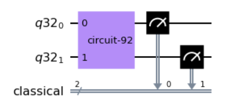

Example
In the quantumUtilities module, you will find the implementation of the vector state tomography algorithm described in the paper
A Quantum Interior Point Method for LPs and SDPs. Here below there is an example of a possible general usage
of this algorithm.
First, a quantum circuit is generated with the following code. This is the quantum circuit that encodes the quantum state that you want to reconstruct.
from qiskit import QuantumCircuit
from qiskit import Aer, transpile
from qiskit.visualization import array_to_latex
from QPCA.quantumUtilities.quantum_utilities import state_vector_tomography
qc=QuantumCircuit(2)
qc.x(0)
qc.h(0)
qc.h(1)
qc.draw()

Then, using the statevector simulator provided by Aer backend, you are able to extract the true statevector of this circuit. This is only to check the result that you are going to obtain by executing the tomography procedure.
aer=Aer.get_backend('statevector_simulator')
statevector=aer.run(transpile(qc,aer)).result().get_statevector()
array_to_latex(statevector)

Therefore, you can execute the tomography procedure by passing the quantum circuit as parameter and the number of shots as the number of times that you want to measure the quantum state. The higher the number of measures, the more accurate the estimates. The output will be an estimate of the statevector in the form of a dictionary: the keys are the quantum states and the values the corresponding amplitudes with sign.
>>> state_vector_tomography(qc,n_shots=8000,drawing_amplitude_circuit=True,drawing_sign_circuit=True)
{'00': 0.5054700782440045,
'01': -0.4978704650810289,
'10': 0.5016223679223246,
'11': -0.4949747468305833}
In the tomography function, you can also specify the drawing_amplitude_circuit flag, which if set to True returns as output the plot of the circuit that implements the amplitude estimation procedure (step 1 of the algorithm provided in A Quantum Interior Point Method for LPs and SDPs).
If you set to True even the drawing_sign_circuit flag, the function returns the plot of the circuit that implements the sign estimation procedure (step 2 of the algorithm provided in A Quantum Interior Point Method for LPs and SDPs).